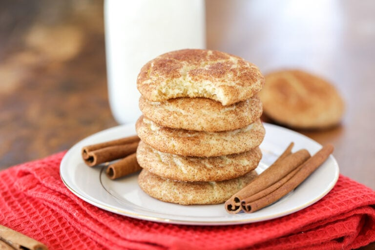

Snickerdoodles

Description
This recipe will produce delicious melt-in-your-mouth Snickerdoodle cookies.
The Snickerdoodle is a popular Christmas-time cookie that will please all generations.
Ingredients
- 1 c. unsalted butter
- 1 1/2 c sugar
- 2 large eggs
- 2 t vanilla
- 2 3/4 c flour
- 1 1/2 t Cream of Tartar
- 1/2 t baking soda
- 1 t salt
Cinnamon Sugar Mixture
- 1/4 c sugar
- 1 1/2 T cinnamon
Instructions
- Preheat oven to 350F degrees
- Cream butter and sugar for 4-5 minutes until light and fluffy
Add the eggs and vanilla then cream 1-2 minutes longer.
- Stir in flour, cream of tartar, baking soda and salt
- Stir together sugar and cinnamon
- Wrap dough and chill for 20-30 minutes, then roll into small balls and drop into the cinnamon-sugar mixture
- Bake for 9-11 minutes. Then let cool before removing from pan